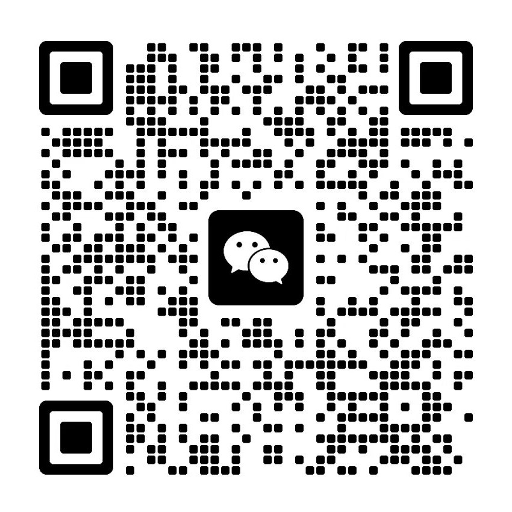
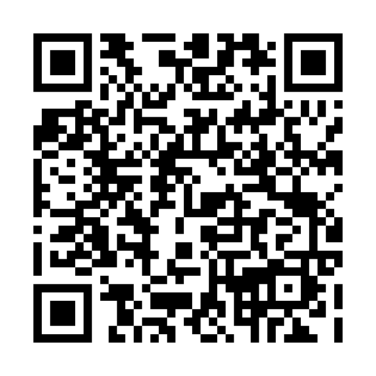
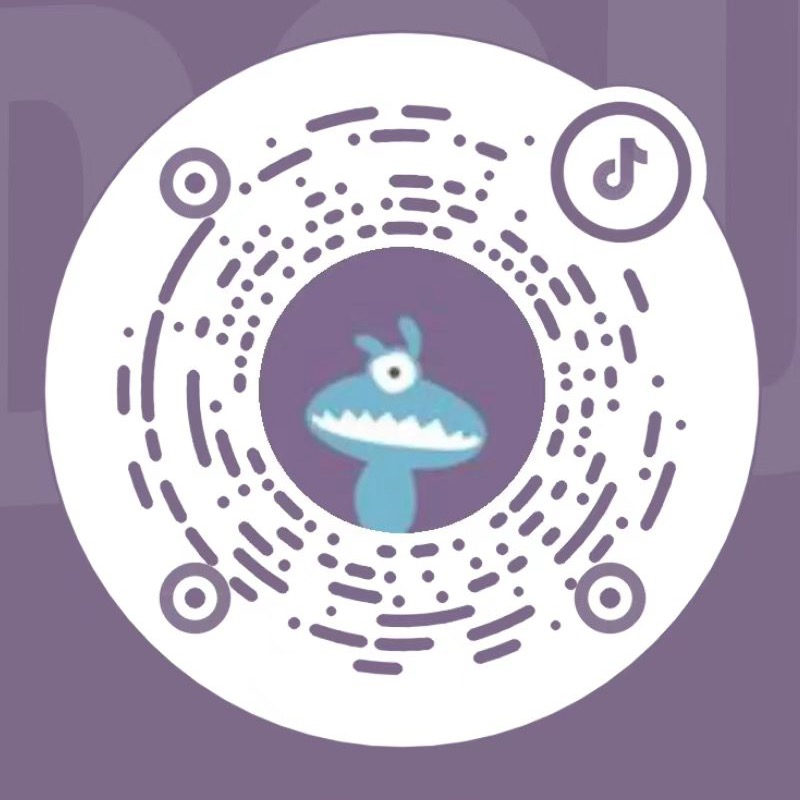
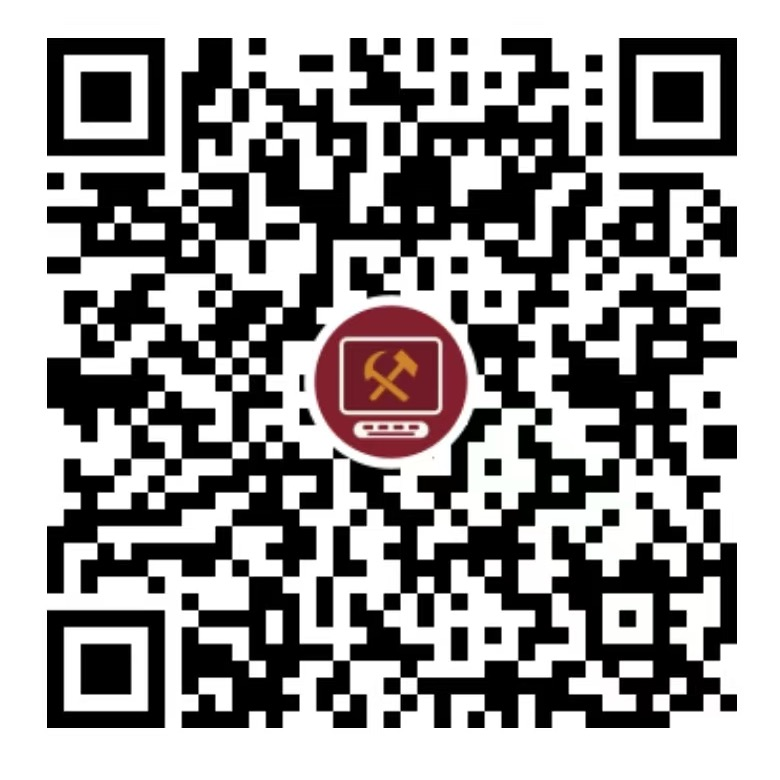

软件是一种服务，我们想把它，还给人民
一个幽灵，数据平权的幽灵，正在互联网上游荡。 旧世界的一切势力——平台与算法、资本与流量、推荐位与排行榜——都在为驱逐这个幽灵而结成同盟。
至今一切互联网的历史，是一部收租的历史。但首先要承认：平台曾经起过非常革命的作用——它把十亿人接进数字世界，不到二十年创造的连接，比过去一切世代还要多。然而它在所到之处，把一切关系都变成了流量关系：手艺变成评分，邻里变成私域，休息变成待接单状态；人和人之间除了赤裸裸的抽成，再没有任何别的联系。骑手的轨迹、商家的流水、用户的点击，本是劳动，却都成了领主的地租。平台坐在生产者与消费者中间，活成了数字封建领主。
但 AI 来了。写软件的能力正在白菜化，生产力开始过剩——平台像魔法师，再也不能支配自己用法术呼唤出来的魔鬼。稀缺的时代，胜负看谁能生产；过剩的时代，胜负看红利让给谁。平台不仅锻造了置自身于死地的武器——白菜价的软件生产力；它还产生了将要运用这种武器的人——被它收租二十年的工友。
注：工友，不按行业，按人在生产关系中的位置——指不占有平台、数据与算法，因而不得不向数字领主交租、出卖劳动来维持生活的一切人：一产二产劳动者、服务业新蓝领、个体经营者、失业待业者、无偿再生产劳动者（全职妈妈、照顾者）、被去技能化的低级白领。（详见背面《牛马互助协议》第二条）
全部主张，概括为一句话：红利归于人民。
数据归生产数据的人。你的轨迹、流水、点击，是你的劳动，不是领主的地租。
软件是一种服务，不是一种租金。
过剩的生产力红利，应当归于人民。
有人已经被资本收益率逼着站到了消费端：拼多多、直播、团购、UGC……但这不是觉悟。其一，它们不彻底——踩着另一端的小生产者，把一部分人民，喂给另一部分人民；其二，让利只是饵——大部分收益仍进了资本家的口袋，阳谋不说出口，闷声装进腰包。但正因如此，它们每向消费端走一步，都在替我们证明红利让给人民是赢的方向：资本家正在出售绞死自己的绞索。我们要同时站在劳动的一端和使用的一端：不在工友之间套利，让出去的利也不绕回少数人的口袋。
我们不屑于隐瞒自己的观点和意图。全部打法都摆在桌面上——怎么定价、怎么让利、怎么自我约束，见背面《牛马互助协议》。




仿 GPL 的传染性互助协议 —— 优惠像源代码一样传染
凡适用本协议的软件服务，向工友提供时，价格不超过同类服务市场价的 1/3。
按人在生产关系中的位置划分，不按行业：一产二产劳动者、服务业新蓝领、个体经营者、失业待业者、无偿再生产劳动者（全职妈妈、照顾者）、被去技能化的低级白领。
任何公司，只要公开承诺并实际遵守本协议（同样以 ≤1/3 市场价向工友提供其软件服务），即可按 1/3 市场价享受我们及其他遵守方的软件服务。优惠沿协议链传播，不设上限。
违反本协议者，自违反之日起丧失全部优惠资格，并自违反之日起追缴欠款——欠款，指违规期间所享优惠价与市场价之差。缴清欠款、恢复遵守并公示后，可重新加入。
我们以高于本协议的标准约束自己，写进章程、公开接受监督：